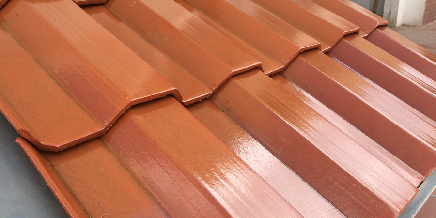

La Constructora Sandoval ofrece una amplia gama de servicios en el sector de la construcción, destacándose por su excelencia y compromiso con la calidad. Nuestros servicios incluyen venta de materiales de construcción de primera calidad, así como la construcción de viviendas, carreteras, puentes y otras infraestructuras clave. Con un enfoque centrado en la innovación y la sostenibilidad, nos esforzamos por superar las expectativas de nuestros clientes, brindando soluciones eficientes y duraderas que contribuyan al desarrollo y progreso de las comunidades donde operamos. Confíe en Constructora Sandoval para sus proyectos de construcción, donde la calidad y la integridad son nuestra prioridad.
Construtora Sandoval proporciona cemento de primera calidad, altamente duradero y resistente, ideal para una amplia variedad de proyectos de construcción. Cumplimos con los estándares más exigentes de la industria, asegurando resultados confiables y duraderos en cada obra. Confíe en nosotros para obtener cemento confiable que satisfaga sus necesidades de construcción.
Constructora Sandoval ofrece bloques de construcción de alta calidad, reconocidos por su resistencia y durabilidad en una variedad de proyectos de construcción. Nos comprometemos a cumplir con los estándares más exigentes de la industria para garantizar resultados confiables y duraderos en cada obra. Confíe en nosotros para obtener un suministro confiable de bloques de construcción que satisfaga sus necesidades de construcción.
Constructora Sandoval ofrece pisos de alta calidad, conocidos por su resistencia y durabilidad en una variedad de proyectos de construcción. Nos comprometemos a cumplir con los estándares más rigurosos de la industria para garantizar resultados confiables y duraderos en cada obra. Confíe en nosotros para obtener un suministro confiable de pisos que satisfaga sus necesidades de construcción.
Constructora Sandoval ofrece tejas de primera calidad, reconocidas por su resistencia y durabilidad en una variedad de proyectos de construcción. Nos comprometemos a cumplir con los estándares más rigurosos de la industria para garantizar resultados confiables y duraderos en cada obra. Confíe en nosotros para obtener un suministro confiable de tejas que satisfaga sus necesidades de construcción.
.jpeg)
.jpeg)
En Constructora Sandoval, nos dedicamos a proporcionar soluciones de construcción de alta calidad con un enfoque en la excelencia, la innovación y la satisfacción del cliente. Con un equipo experimentado y comprometido, nos esforzamos por crear espacios que inspiren y enriquezcan la vida de las personas. Nuestra misión es superar las expectativas de nuestros clientes y contribuir al éxito a largo plazo de sus proyectos, ofreciendo servicios de primera calidad y resultados excepcionales en cada etapa del proceso de construcción.
En Constructora Sandoval, contamos con una amplia experiencia en la industria de la construcción, respaldada por años de proyectos exitosos de diversos tamaños y complejidades. Nos enorgullece ofrecer un servicio de alta calidad, caracterizado por nuestra dedicación a la excelencia en cada etapa del proceso. Nuestro equipo altamente capacitado se compromete a superar las expectativas del cliente, asegurando resultados excepcionales de manera eficiente y dentro del presupuesto establecido. Confíe en nosotros para garantizar una experiencia de construcción sin problemas y resultados de calidad superior en cada proyecto que emprendamos.
"Quiero compartir mi experiencia positiva con Constructora Sandoval. Recientemente, contraté sus servicios para la construcción de mi nuevo negocio y estoy muy contenta con el resultado. El equipo de Constructora Sandoval demostró un alto nivel de profesionalismo y dedicación en cada etapa del proyecto. Su atención al detalle y compromiso con la calidad fueron evidentes desde el principio. ¡Estoy muy agradecida y feliz de haber elegido a Constructora Sandoval para mi proyecto!"
"No puedo expresar lo satisfecho que estoy con el trabajo realizado por Constructora Sandoval. Contraté sus servicios para la remodelación de mi hogar y el resultado superó mis expectativas. Desde el primer contacto hasta la finalización del proyecto, el equipo fue extremadamente profesional y atento a mis necesidades. Cumplieron con los plazos acordados y se aseguraron de que cada detalle fuera perfecto. ¡Recomendaría a Constructora Sandoval sin dudarlo a cualquier persona que busque servicios de construcción de alta calidad!"